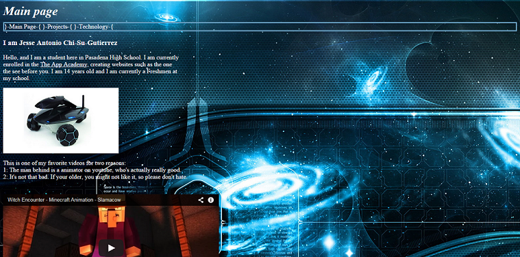
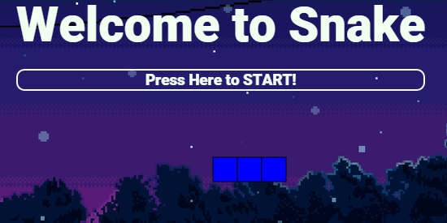
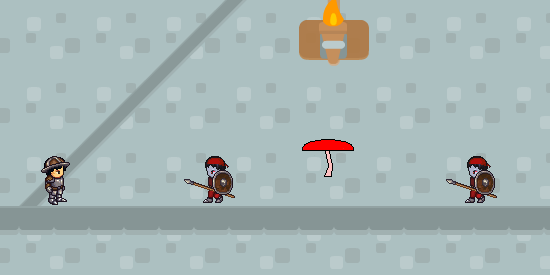
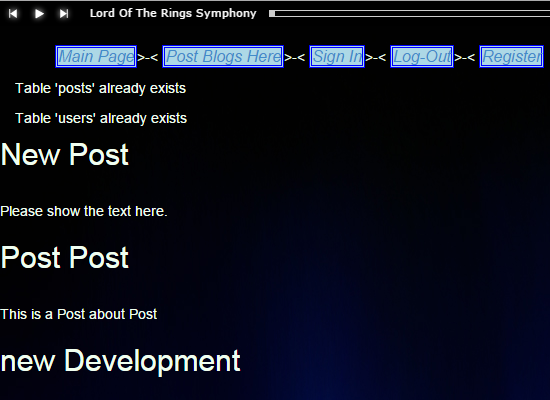

Projects
Welcome to my new Projects page.
Portfolio V1

The beginning of all things I have learned, it all
began here. This was my first programming challenge,
my first programming experience, my first aspiration
to learn more about programming.
Portfolio V2

This is to show how far I have gone from my first
Portfolio, and both projects were in my perspective
exemplary for me just starting out. I was pleased
with my results, and I don't feel I should change
anything, for I did great on these projects.
Snake

This, out of all my projects, was the most irritating
and ruthless. It was the most rage-inducing gam I have
ever created, but it work out to be a B-average game.
Mario

This is my Mario game, and it's so far my greatest
accomplishment. Just having the ability to create a
world in which I create the story was the greatest
feeling ever. This is my first 2-D Plat-former game,
and I think I did exemplary/
Portfolio V3
Your looking at it, and there is nothing to be said.
Blog

This is one of my proudest and most interactive web-site
(or blog) that I have made a pretty good blog. But for a
simple, non-complex blog that gives the user a basic
accessibility, it's alright. Yes, there are some
characteristics in my blog that you won't be able to
find in other blogs in my class, but this project was
only a foundation for my ability to understand web-site
interaction.